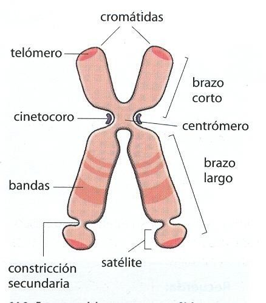

Genética
La Genética es la rama de la biología que estudia los mecanismos de herencia biológica, el ADN, el ARN, los genes y la evolución.
En esta sección vamos a repasar una parte del tema.
Nucleótidos
Los Nucleótidos son las estructuras moleculares con las que se construye el ADN y ARN. Son estructuras químicas orgánicas que contienen información genética e instrucciones para la síntesis de proteínas. Básicamente son los ladrillos o parte del rompecabezas con los que construimos el ADN y el ARN.

Y estos eslabones se van a unir uno a otros, formado una cadena.

Veamos un poco más en detalle las partes de los nucleótidos para entender un poco más. La parte del azúcar puede ser de 2 tipos:
- Ribosa
- Desoxirribosa
Según el tipo de azucar que la conforme eso nucleotidos va a ser ARN si es Ribosa. De ahí la sigla ARN, que significa "Ácido Ribo Nucleico". Y si es de Desoxirribosa, será ADN, el "Ácido Desoxirribo Nucleico".
Otra característica de los nucleótidos es que hay distintos tipos de bases nitrogenadas.
Las Purinas:
- Adenina (A)
- Guanina (G)
Las Pirimidinas
- Citosina (C)
- Tiamina(T)
- Uracilo (U)
Los nucleótidos además de formar parte del ADN y el ARN, también trabajan como transportadores de Energía.
Diferencias entre ADN y ARN
ADN (Ácido Desoxirribonucleico)
- Doble Hélice: Piensa en una escalera de caracol. Es una estructura de dos hebras que se enroscan entre sí.
- Almacenamiento de Información: Es el libro de recetas maestro de la célula, guardando todas las instrucciones genéticas necesarias para construir y mantener a un organismo.
- Bases Nitrogenadas: Está compuesto por Adenina (A), Timina (T), Citosina (C) y Guanina (G). Adenina siempre se empareja con Timina, y Citosina con Guanina.
- Estabilidad: Es muy estable y puede durar toda la vida de un organismo.
ARN (Ácido Ribonucleico)
- Hebra Simple: Imagina una sola hebra, más como una copia temporal de una receta específica del libro maestro.
- Mensajero: Actúa como el mensajero, llevando instrucciones desde el ADN en el núcleo de la célula hacia las fábricas de proteínas (ribosomas).
- Bases Nitrogenadas: En vez de Timina, el ARN usa Uracilo (U). Así que, Adenina se empareja con Uracilo.
- Diversidad de Tipos: Hay varios tipos de ARN, como el ARNm (mensajero), ARNt (transferencia) y ARNr (ribosomal), cada uno con funciones específicas.
- Menos Estable: Es más corto y menos estable que el ADN, perfecto para su papel temporal en el proceso de construcción de proteínas.
Del ADN a las Proteínas
1. Almacenamiento de Información en el ADN
El ADN (ácido desoxirribonucleico) es una molécula que contiene las instrucciones necesarias para el desarrollo y funcionamiento de todos los organismos vivos. Estas instrucciones están codificadas en la secuencia de cuatro bases nitrogenadas: adenina (A), timina (T), citosina (C) y guanina (G). Estas bases forman pares específicos (A con T y C con G) y se organizan en una estructura de doble hélice.
La forma en que unen las cadenas sigue un patrón, a eso se le llama Cadenas Complementarias. Es decir que se van a unir de una manera específica con la cadena del frente.
La Adenina (A) se va a unir a Timina (T) y la Citosina (C) a la Guanina (G), en el ADN.
En caso de que se quiera hacer una copia del ADN a ARN, la Adenina (A), se va a complementar con Uracilo (U). Una regla mnemotecnica para Recordar esta secuencia es Anibal Troilo y Carlos Gardel.
El ADN está empaquetado en los cromosomas, que se encuentran en el núcleo de la célula. Cada cromosoma contiene miles de genes, que son segmentos específicos de ADN que codifican proteínas.
Partes de un Cromosoma
1. Cromátidas
Las cromátidas son cada una de las dos mitades idénticas de un cromosoma duplicado. Están unidas por el centrómero. Durante la división celular, las cromátidas se separan para formar dos nuevos cromosomas, cada uno de los cuales va a una célula hija.
2. Centrómero
El centrómero es la región estrecha del cromosoma que une a las cromátidas hermanas. Es esencial para la correcta separación de las cromátidas durante la mitosis y la meiosis, pues es el punto de unión de los microtúbulos del huso mitótico.
3. Telómeros
Los telómeros son las regiones terminales de los cromosomas. Protegen los extremos de los cromosomas de la degradación y evitan que los cromosomas se fusionen entre sí. Los telómeros juegan un papel crucial en el envejecimiento celular y la estabilidad genética.
4. Brazo Corto (p)
El brazo corto, también conocido como brazo "p" (del francés "petit"), es la parte del cromosoma que se encuentra por encima del centrómero. Contiene genes que son cruciales para diversas funciones celulares.
5. Brazo Largo (q)
El brazo largo, conocido como brazo "q", es la parte del cromosoma que se encuentra por debajo del centrómero. Al igual que el brazo corto, contiene muchos genes importantes y es fundamental para la función celular y el desarrollo.
2. Transcripción del ADN al ARN
La transcripción es el proceso mediante el cual se copia la información de un gen del ADN en una molécula de ARN mensajero (ARNm). Este proceso ocurre en el núcleo de la célula. Durante la transcripción, la enzima ARN polimerasa desenrolla una pequeña parte del ADN y utiliza una de las hebras como plantilla para sintetizar el ARNm.
En el ARN, las bases son las mismas que en el ADN, excepto que la timina (T) es reemplazada por uracilo (U). Así, en el ARN, adenina (A) se empareja con uracilo (U) y citosina (C) con guanina (G).
3. Traducción del ARN a la Proteína
La traducción es el proceso mediante el cual el ARNm se convierte en una proteína. Este proceso ocurre en los ribosomas, que están en el citoplasma de la célula. El ARNm se une al ribosoma y es leído en grupos de tres bases llamados codones. Cada codón especifica un aminoácido particular.
El ARN de transferencia (ARNt) lleva los aminoácidos al ribosoma y los coloca en la secuencia correcta según las instrucciones del ARNm. Los aminoácidos se unen entre sí para formar una cadena polipeptídica, que se pliega para formar una proteína funcional.
Video Explicando la Transcripción